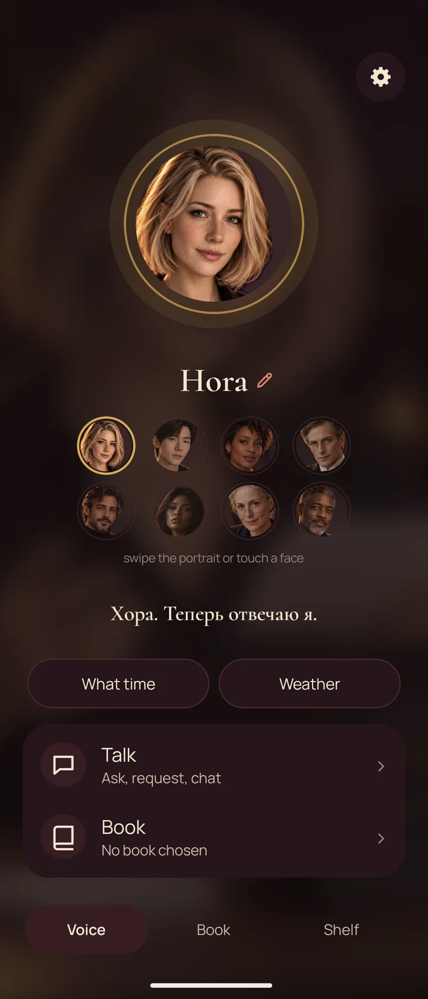
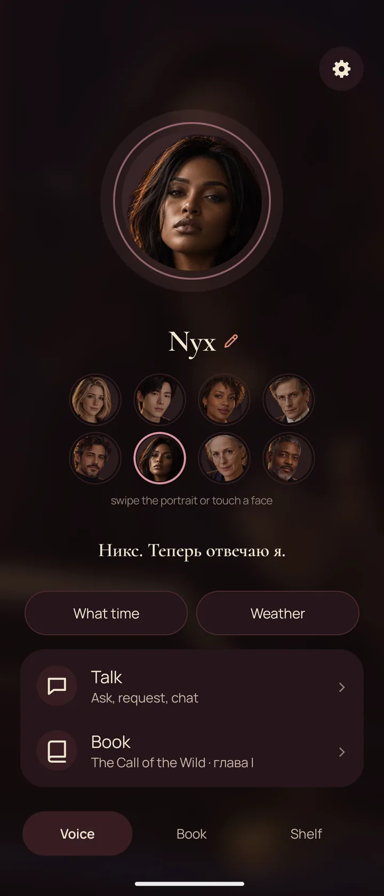
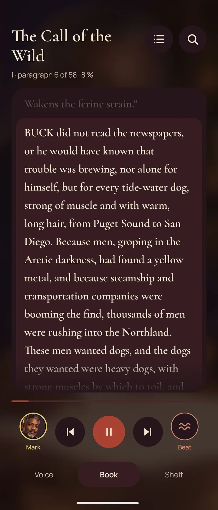
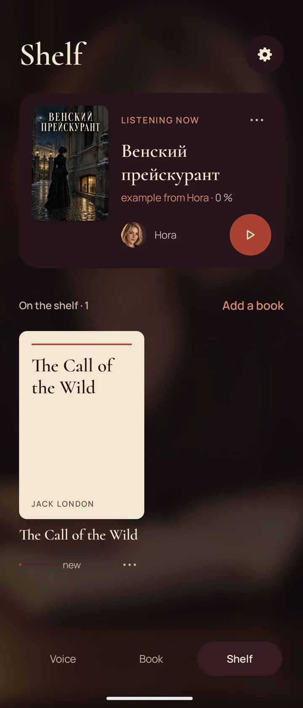
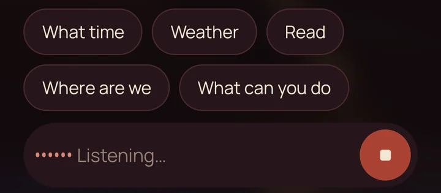
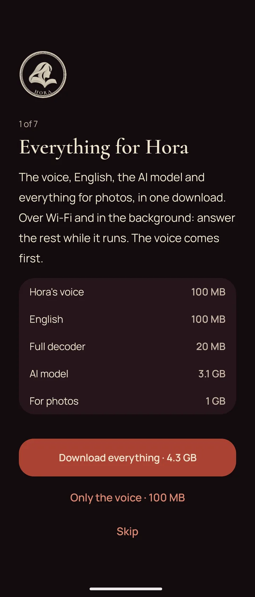

A voice for books, notifications and talk. Everything lives on the phone.
Version 1.6.7 · Android 8 or newer, 64-bit ARM · free, GPL-3.0 · Hora speaks Russian; English books have an English voice

Voices
Hora has voices of her own, made for her and licensed for her, each with a portrait, a name and a manner. Touch a face and that voice answers from now on; give it a name of your own if you like.
Who reads a book and who answers the talk are separate choices: one voice can read the novel while another tells you the time.

Books
Put your own books on the shelf, or take one from the free libraries and the carefully edited English classics inside the app. Russian books are read by the voices; English books by an English voice.
The paragraph being read stands raised on the page, so the eye can follow the ear. The cover comes from the book file itself, never invented. A quiet background — rain, surf, a fireplace, soft music — can play under the voice.
Headphone buttons do what they do in any player: play, pause, forward, back.


Talk
Type a question — or press the round button, speak, and pause. The words appear as you say them and go out by themselves. Hearing runs on the phone; no sound leaves it.
With the optional AI model, the talk goes further: free questions, short answers, and a look at a photo you show it. The model runs on the phone too.

Privacy
The voices and the models are downloaded once, inside the app, over Wi-Fi and in the background. Take all of it, or only the voice.
Nothing you say or read is sent anywhere. The network is used only for the weather, the libraries, answers from the encyclopedia and these downloads. Hora asks for no access to all your files: only the one folder you show it.

Hora reads new messages into your own headphones, and only there. A wireless device is asked about once: yours hears everything, a car or a speaker hears nothing private.
Turn any book into chapters of sound while the phone charges at night, ready for any player in the morning.
Settings, places in books and your own names for the voices are kept in one file in Hora's folder. Copy the folder to a new phone, and Hora finds where you left off.